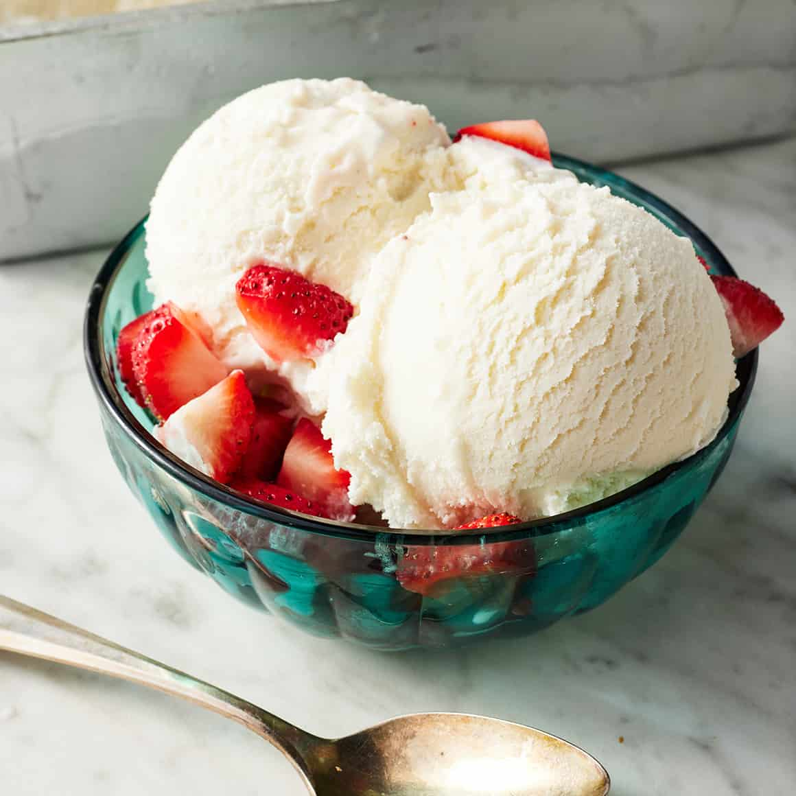

Ice cream

Description
This basic vanilla ice cream recipe has been one of my top dessert recipes ever since it made its debut! In fact, it has been a household favorite dessert among so many of my followers.
This basic recipe involves zero fancy equipment, a few minutes of prep, and only three ingredients, which you can find at any grocery store and a blender.
Ingredients
- Sweetened condensed milk
- Heavy whipping cream
- Vanilla extract (or vanilla bean)
Steps
- Add the three ingredients (plus a dash of sea salt) to a blender or food processor and blend on a low speed just until the ingredients are combined. Avoid blending the mixture for too long in order to avoid the formation of ice crystals.
- Once you have your ice cream base, you can freeze it immediately in a freezer-safe container. Many people transfer the ice cream base to a loaf pan and cover it with plastic wrap to freeze.
- If you do own an ice cream maker, chill the ice cream mixture in the refrigerator for a couple of hours or until the mixture is completely chilled before pouring it into your ice cream maker.
- Turn your ice cream maker on and allow the ice cream to churn until it reaches a thick, soft serve consistency.
- Once the ice cream has finished churning, you can serve it immediately for soft serve consistency, or transfer it to a freezer-safe container and freeze for 2 hours.
- Serve with your favorite toppings like chocolate sauce, fresh blueberries and strawberries, and a sprinkle of chocolate chips.